El fin de semana de 14 y 15 de Septiembre estuvimos en Barcelona realizando nuestra formación de Monitor de Yoga Infantil 🧘♂️🧘♀️
☆
Nos encontramos con un hermoso grupo dispuesto a dar todo de sí con sus brazos abiertos para poder aprender más y brindarle un mejor mundo a los niños y niñas que los rodean.
☆
Este fin de semana contamos con nuestras monitoras Peggy y Soraya quienes fueron las responsables de realizar tan hermosa labor 🙏
☆
Hasta pronto Barcelona, ciudad mágica💜
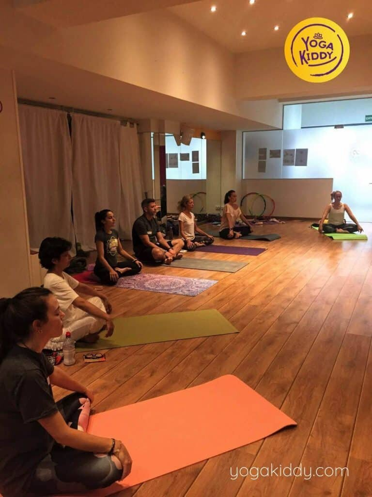
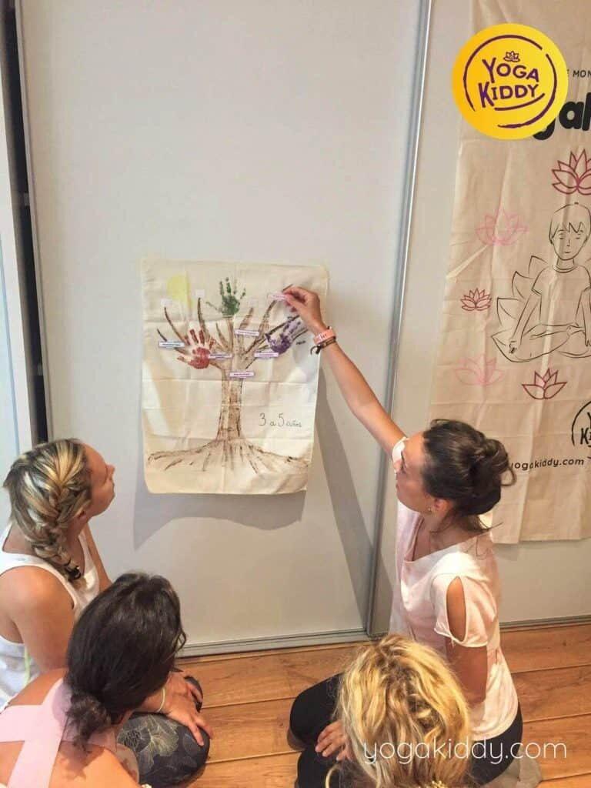
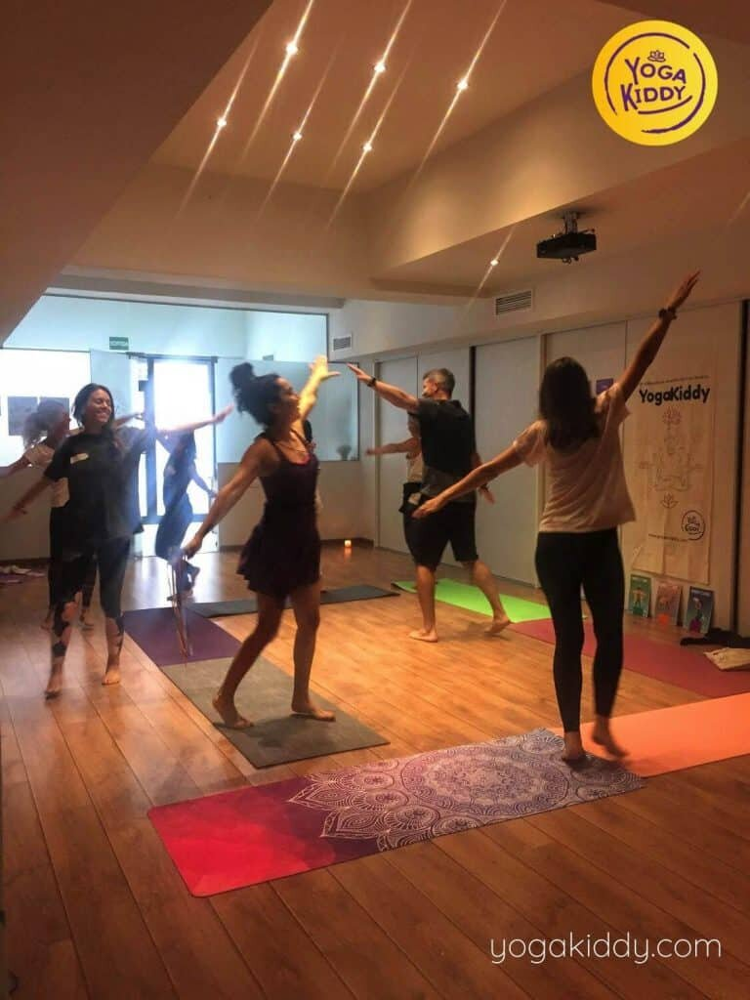
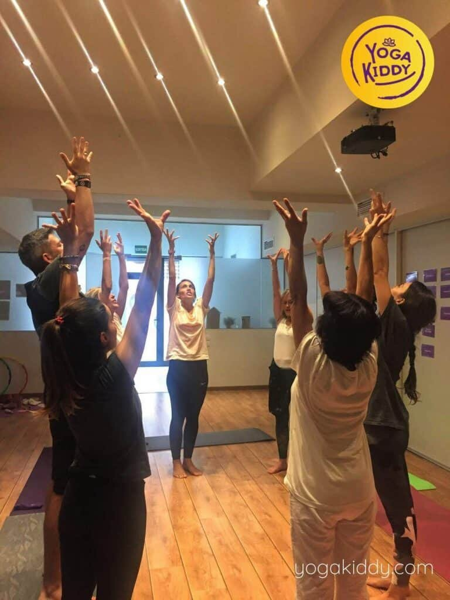
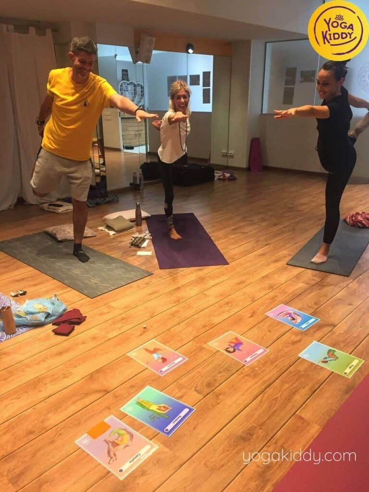
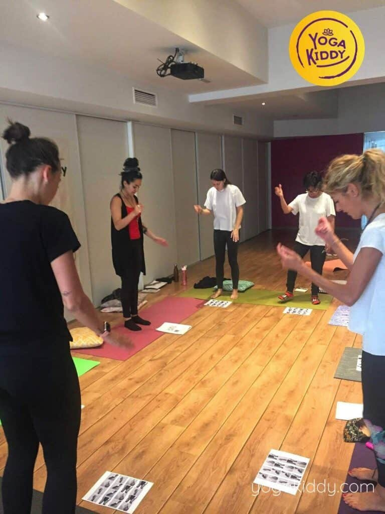
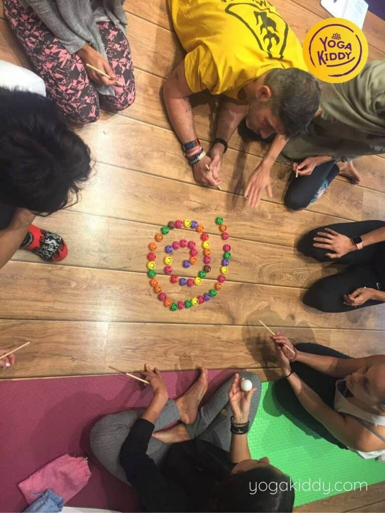
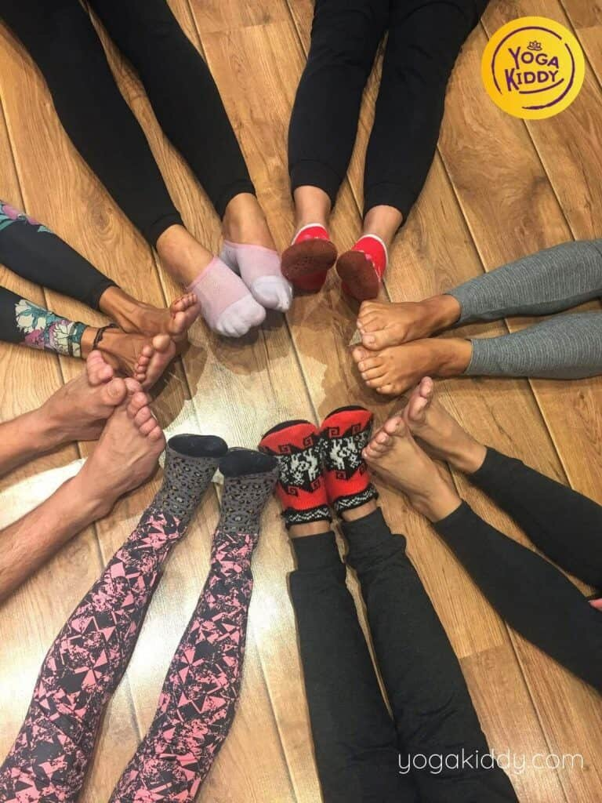
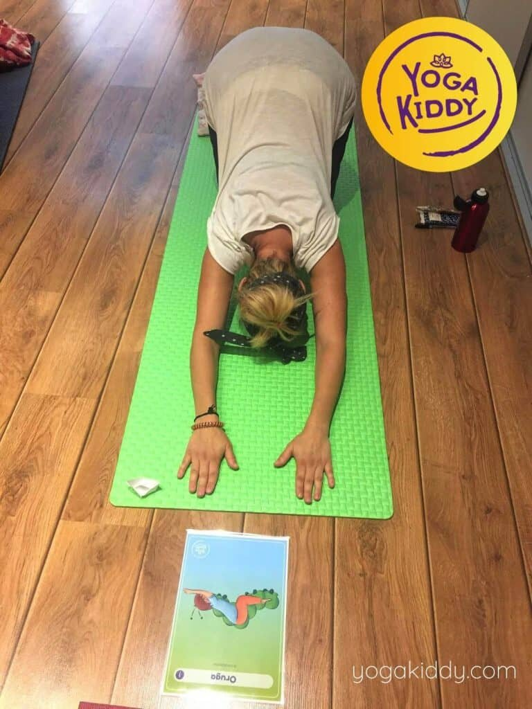
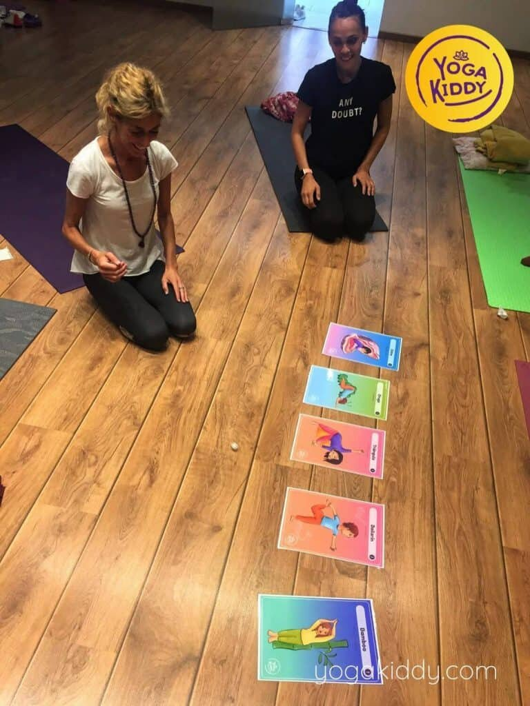
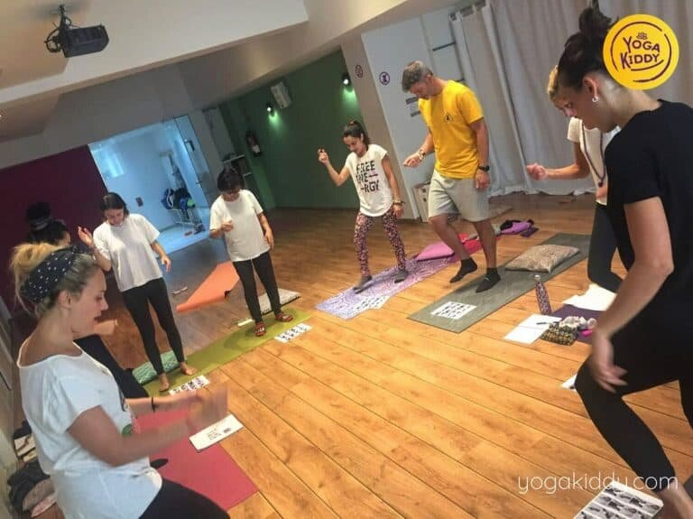
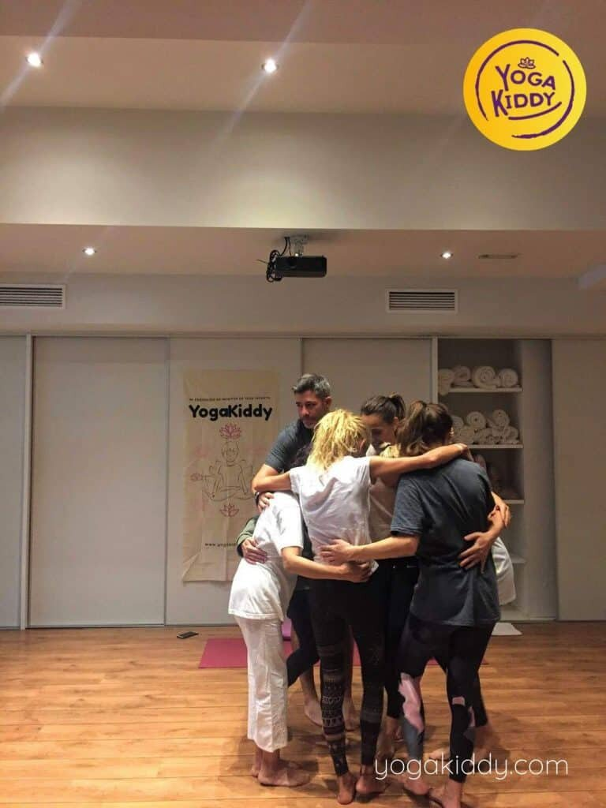
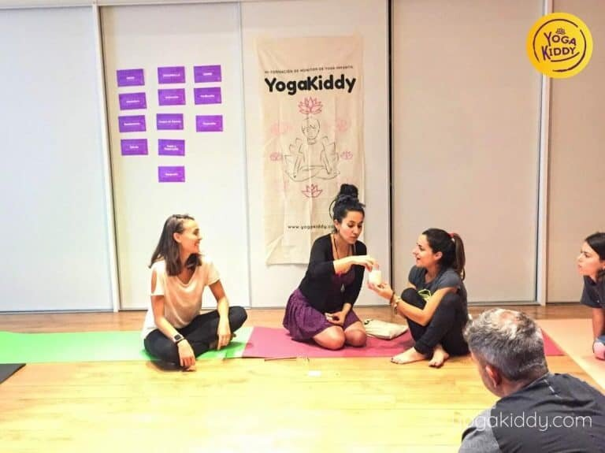
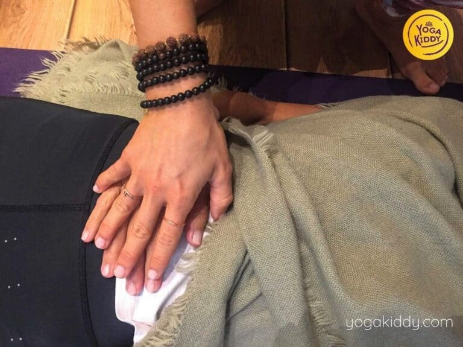
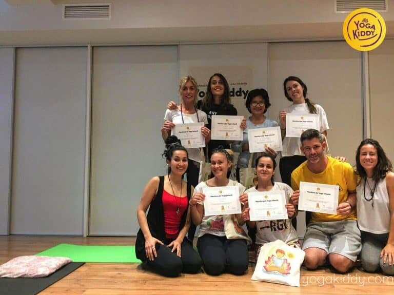
Hola a todos me llamo Alex, acabo de tomar mi formación como monitor de yoga infantil aquí en Barcelona. Compartir con vosotros que ha sido una gran experiencia y me llevo muchas herramientas para compartir esta gran disciplina que es el yoga y quitar los estereotipos que tiene la gente de que significa el yoga. Va mucho mas alla de lo que puedan pensar que es solo posturas. Es una disciplina que puede ayudar mucho a los niños, a la sociedad y convertir a los niños en personas mucho mejores cuando sean personas adultas. Los invitos a esta gran formación con grandes profesoras que son grandes comunicadoras. Los animo que seguros os valdrá mucho.
Hola me llamo Maite. Ahora mismo acabo de finalizar mi formación de yoga para niños en YogaKiddy en Barcelona. Estoy muy contenta, el grupo ha sido fantástico, nuestras formadoras Peggy y Suri un regalo. He aprendido muchísimo en estos dos días, ha sido muy intenso. Realmente tener instrumentos para poder trabajar con niños, poder transmitir lo que es el yoga pienso que es super importante. Aparecen los miedos de como pueden pasar todo este mensaje y que les guste pero realmente la emoción y el sentimiento es lo principal que les demos a los niños. El grupo fantástico y la verdad que he conectado con mi niña interior en estos dos días y todo lo que pasa en el exterior se ha olvidado. Ahora vuelvo al mundo real, estoy muy contenta muchas gracias.